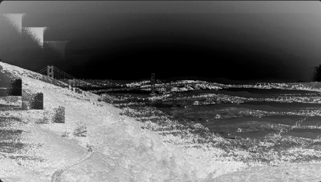
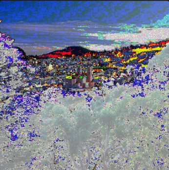

My glitch art project explores the relationship between technology and the urban environment through distortion, fragmentation, and experimental effects. It transforms familiar San Francisco land scape into something unexpected, showing how technology can change the way we see and experience the world.

